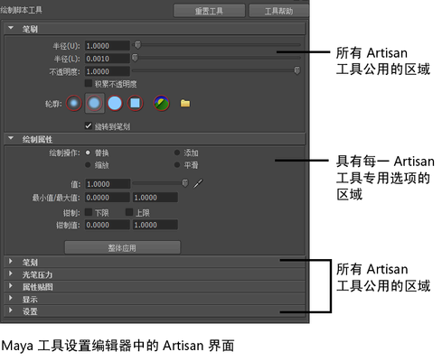

Autodesk ® Artisan ™ 是一个基于直观绘制和雕刻的界面，可在最短时间内提供高质量的复杂结果。
若要打开 Artisan，请执行以下操作：
- 单击其菜单上工具旁边的
 （例如，“修改 > 绘制属性工具”(Modify > Paint Attributes Tool) > ）。
（例如，“修改 > 绘制属性工具”(Modify > Paint Attributes Tool) > ）。
- 在“工具箱”(Tool Box)中双击选定的工具。
提示： 使用 Artisan 时，保留“工具设置”(Tool Settings)编辑器打开。切换工具时，设置更改为反射选定工具。
如果不希望保留“工具设置”(Tool Settings)编辑器打开，请定义热键或使用 Artisan 标记菜单更改每个工具的常用设置。详细信息请参见使用 Artisan 热键和使用 Artisan 标记菜单。
修改工具的设置并将其保存到工具架，以便于访问。详细信息请参见创建 Artisan 工具架。
Maya 中的许多笔刷工具使用 Artisan 界面。这些工具称为“Artisan 工具”。Artisan 工具可用于以更艺术的方式操纵几何体，允许使用笔刷工具绘制其值和特性。

Artisan“笔刷”(Brush)“工具设置”(Tool Settings)
Artisan 使用Maya “工具设置”(Tool Settings)编辑器设置工具特性。所有 Artisan 工具共享公用选项（在 Artisan“工具设置”(Tool Settings)中对这些选项进行了描述）。
对于每个 Artisan 工具，“工具设置”(Tool Settings)编辑器包含一个部分，其中包含特定于工具的设置。该特有部分显示在“笔刷”(Brush)部分的后面，其特有设置随相应工具一起介绍，如下所示：
- “3D 绘制工具”(3D Paint Tool)设置
- Maya 经典动力学
- “绘制属性工具”(Paint Attributes Tool)选项
- 绘制簇权重工具(Paint Cluster Weights Tool)
- “绘制流体工具”(Paint Fluids Tool)选项
- “绘制毛发属性工具”(Paint Fur Attributes Tool) – 请参见 Maya Fur
- 绘制毛囊设置(Paint Hair Follicles Settings)
- 绘制抖动权重工具(Paint Jiggle Weights Tool)
- 绘制脚本工具选项(Paint Scripts Tool Options)
- 绘制选择工具(Paint Selection Tool)
- 绘制集成员身份工具(Paint Set Membership Tool)
- 绘制蒙皮权重工具(Paint Skin Weights Tool)
- 绘制顶点颜色工具选项(Paint Vertex Color Tool Options)
- 使用 MEL 脚本和“绘制脚本工具”(Paint Scripts Tool)绘制
- 雕刻几何体工具选项(Sculpt Geometry Tool Options)
本部分中的主题